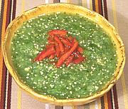

|
Tomatillo Sauce, FreshMexico - Salsa de Tomate Verde Cruda | ||||
| Makes: Effort: Sched: DoAhead: |
1 cup ** 45 min Yes |
An excellent fresh salsa dip for crisp tortilla chips or similar. In Mexico City it's topped with thinly sliced avocado and shredded fresh white cheese, then called Salsa de Albaniles (Bricklayer's sauce). | |||
|
1/2 2 1 1 1/2 1/3 2 |
# oz cl T t T |
Tomatillos (1) Onion white Garlic small Chili Serrano (2) Cilantro (3) Salt Water |
Make - (45 min)
|